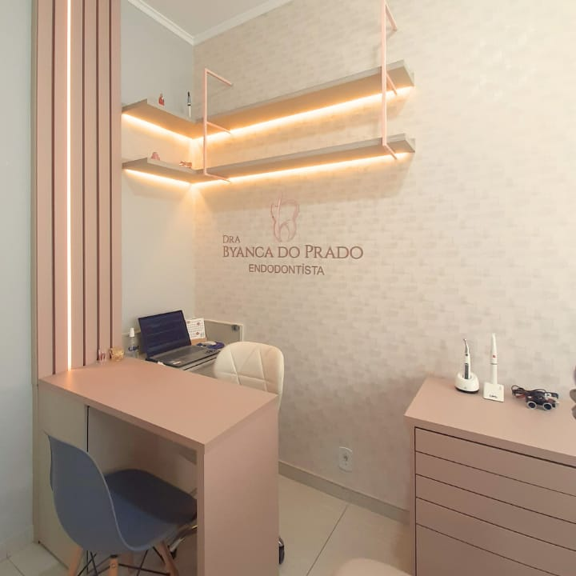
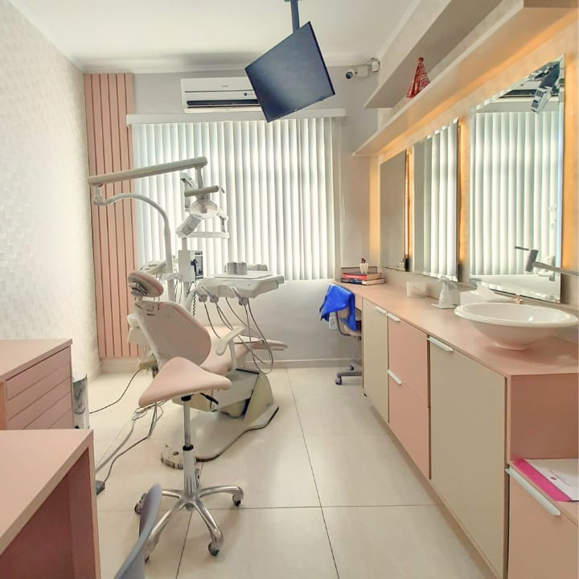
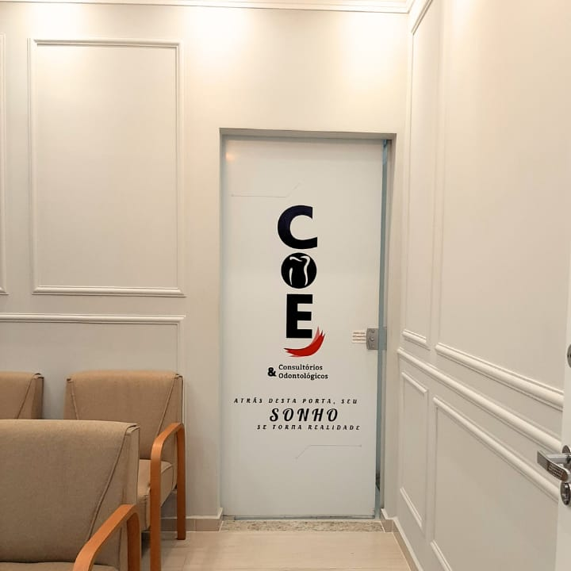
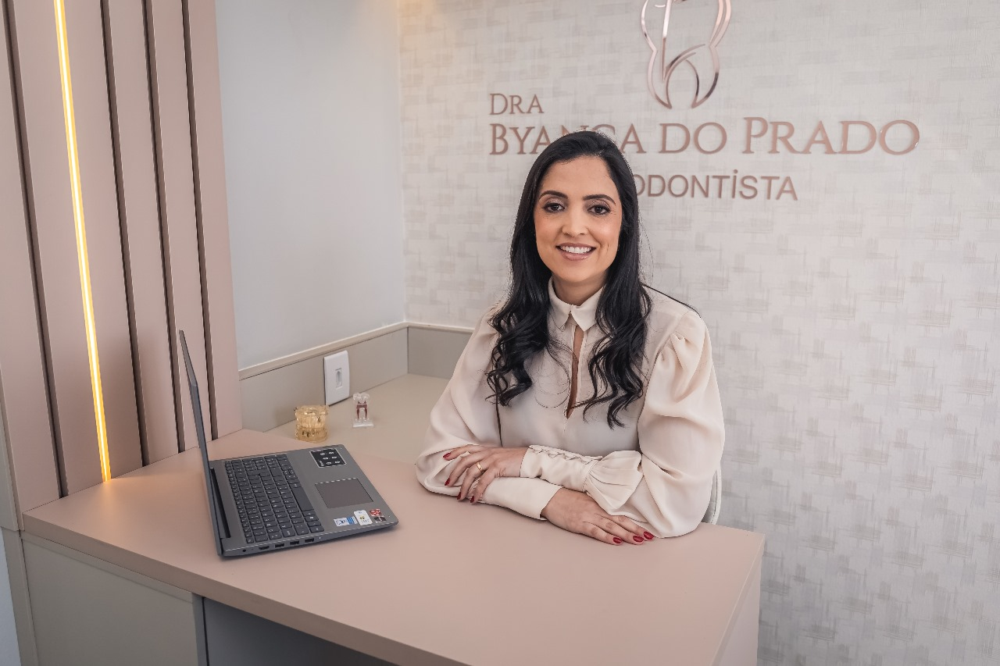
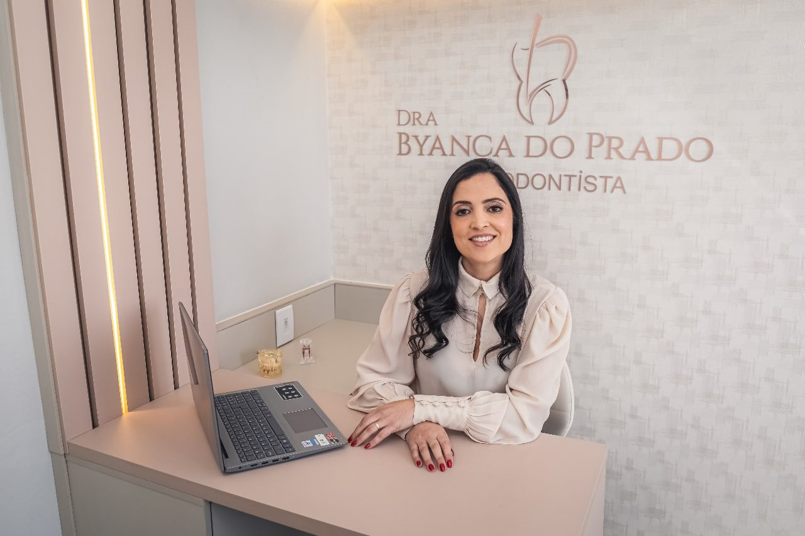
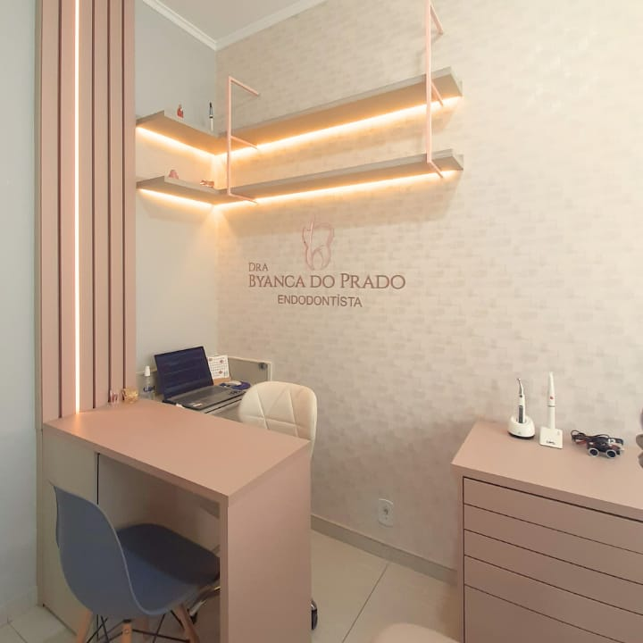
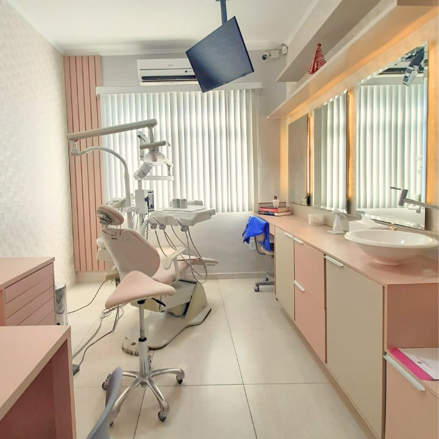
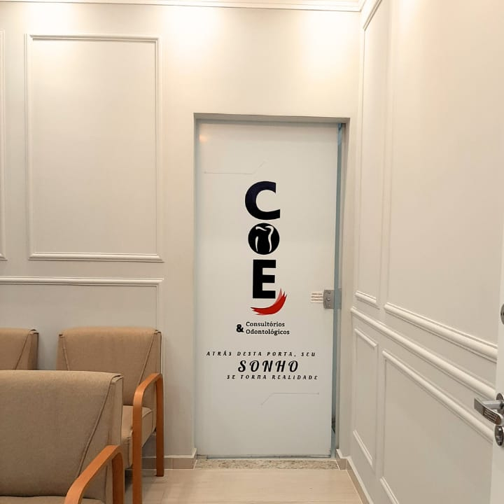
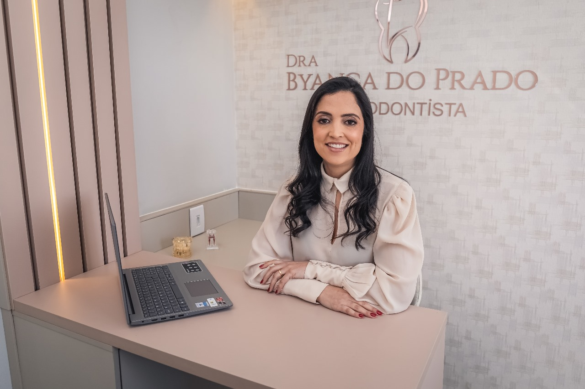
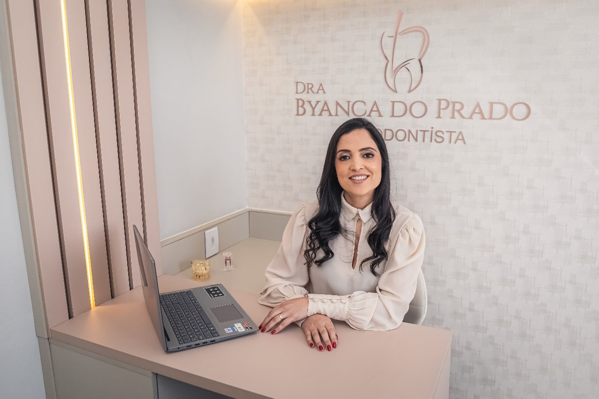

Dor ao mastigar
Dor persistente ao morder pode indicar inflamação ou infecção na polpa do dente.
Endodontia com instrumentos rotatórios e raio X digital em Itajubá. Atendimento humanizado, com foco em conforto e previsibilidade.
Endodontista em Itajubá (MG), com atuação focada em diagnóstico preciso, conforto do paciente e previsibilidade clínica.
Sinais e sintomas mais comuns que exigem avaliação especializada.
Dor persistente ao morder pode indicar inflamação ou infecção na polpa do dente.
Desconforto que persiste após contato com frio/quente é um alerta para comprometimento pulpar.
Presença de fístula (bolinha de pus) ou edema próximo à raiz do dente.
Batidas e fraturas podem expor a polpa e necessitar de tratamento imediato.
Do diagnóstico ao tratamento, com tecnologia e precisão.
Planejamento claro, comunicação cuidadosa e foco em conforto durante todo o procedimento.
Fluxo otimizado e instrumentação rotatória permitem concluir muitos casos em 1 sessão.
Imagem digital com menor dose de radiação e melhor definição.
Ambiente acolhedor e manejo cuidadoso da dor e da ansiedade.
Ambiente acolhedor, iluminação suave e equipamentos atualizados.
.jpg) 









Descreva seus sintomas por voz ou texto. O assistente sugere próximos passos e monta a mensagem para o WhatsApp automaticamente. Tudo roda no seu navegador (sem enviar a servidores).
Este recurso usa Web Speech API para ditado e regras locais para orientação inicial. Procure avaliação presencial para diagnóstico definitivo.Veja as avaliações no Google e conheça as experiências de quem já passou por aqui.
“Atendimento excelente e resultado impecável. Recomendo!” — Paciente verificado
“Tive um trauma dentário e fui atendida no mesmo dia. Profissional incrível.” — Paciente verificado
Com anestesia adequada e técnicas modernas, o desconforto é mínimo. O objetivo é justamente eliminar a dor causada pela inflamação/infecção.
Na maioria dos casos, 1 sessão é suficiente. Casos complexos podem exigir retorno.
Geralmente entre 45 e 90 minutos, dependendo do dente e da anatomia dos canais.
Entre em contato para verificar cobertura ou solicitar recibo para reembolso conforme o plano.
Clínica COE Itajubá
Rua Maestro Luiz Ramos de Lima, 73 – Centro
Itajubá/MG – 37500-014
WhatsApp: (35) 9 9868-6030
Telefone: (35) 3622-1287